08.40 En tirsdag. 09.30 Et køkkenbord. 12.14 Hvad blodet ved.
Én dag hos én person
Blodprøven tages hjemme hos dig i København.
De fleste ting kroppen fortæller, fortæller den stille og i god tid.
Et blodprøvesvar er ikke en dom.
Ingen henvisning · ingen venteliste
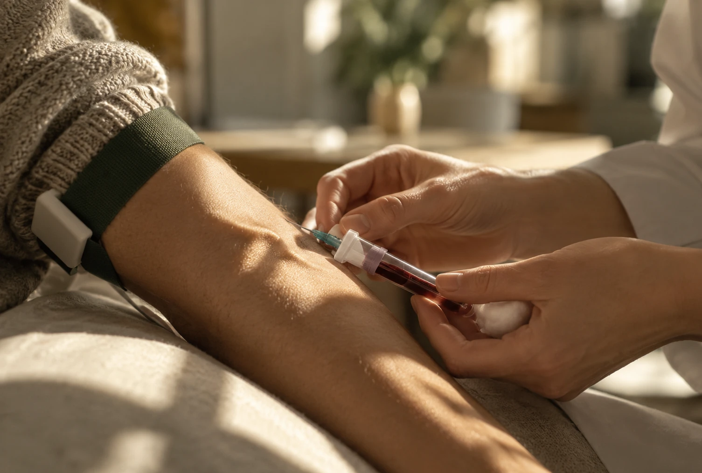
Stock · ikke PandoniaÉn af markørerne
Lavt D-vitamin er udbredt i Danmark, især i vinterhalvåret.
Påvirker immunforsvar, knoglestyrke og mental balance.
Awaiting clinical review — EnglishLow vitamin D is common in Denmark, particularly through the winter.
Awaiting clinical review — EnglishIt affects the immune system, bone strength and mental balance.
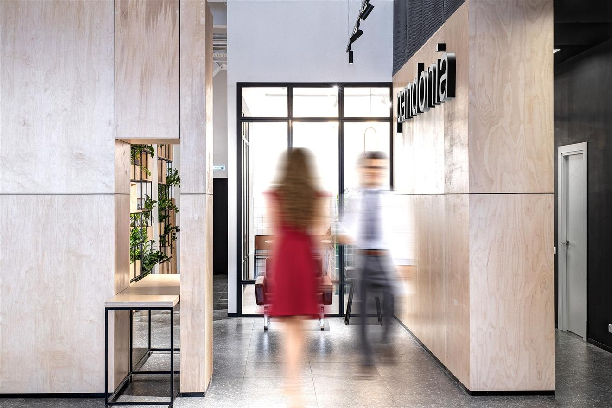
Ægte · Pandonias lokalerEt køkken i København, ti minutter i ni.
Prøven tages, mens kaffen stadig er varm.
Fra din bordkant til dit svar.
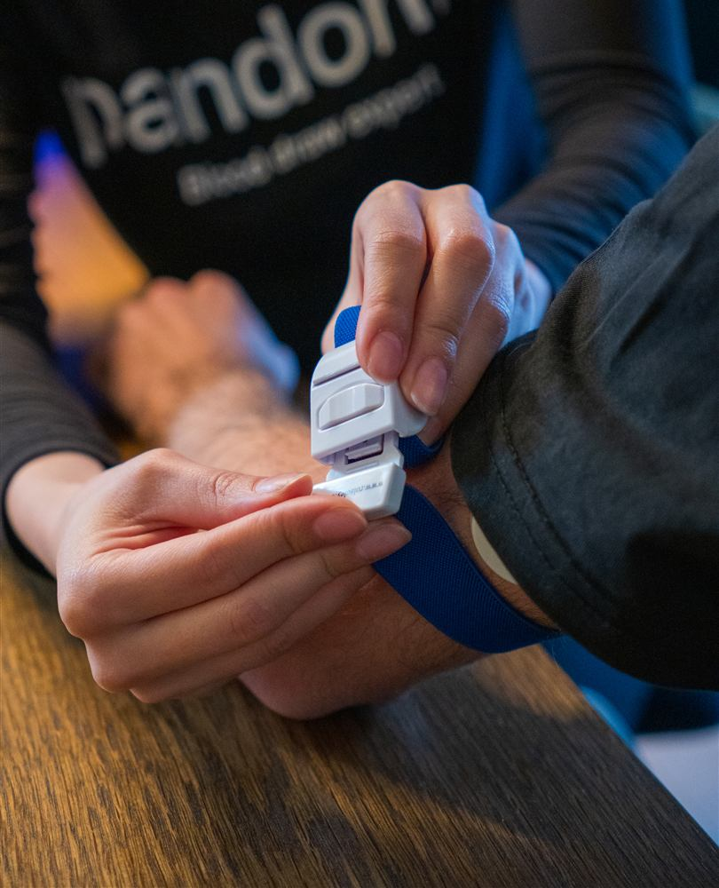
Ægte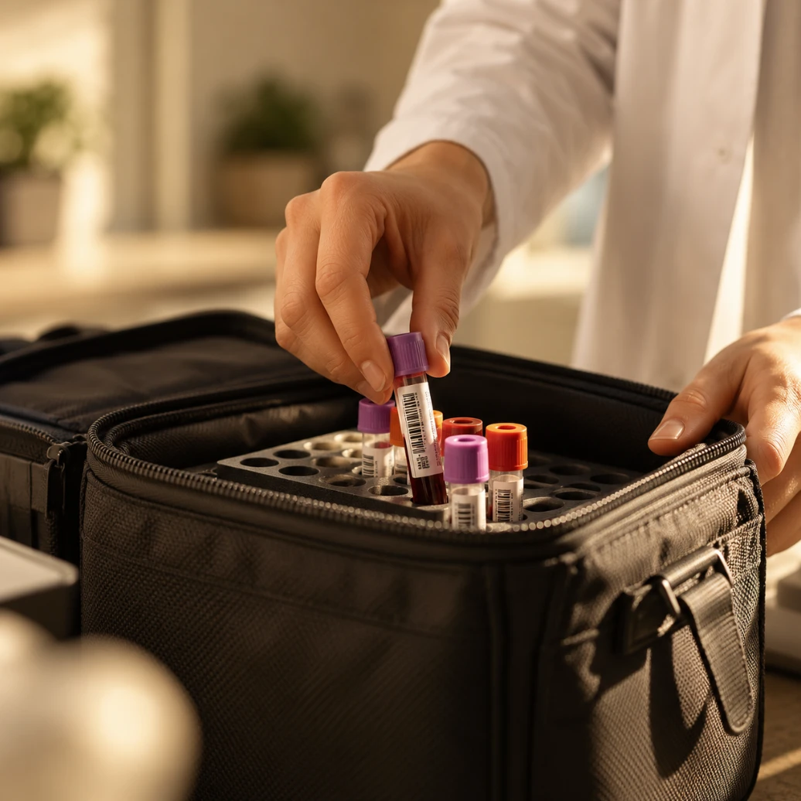
Stock · ikke Pandonia- Stock · ikke Pandonia
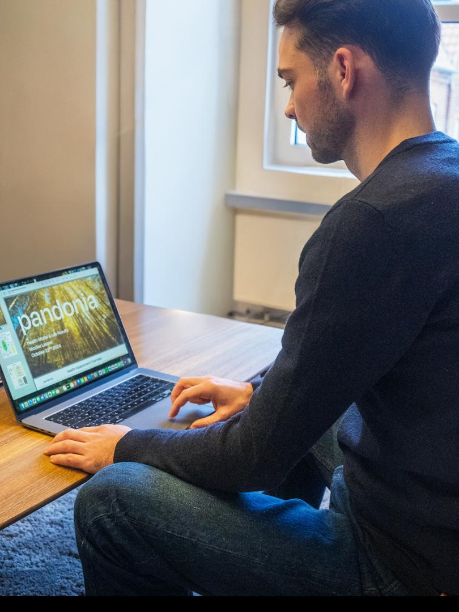
Ægte · produkt- Stock · ikke Pandonia
08.40
Deborah ringer på
Fem minutter ved køkkenbordet.
09.05
Prøven kører ind
Til laboratoriet.
09.30
Analysen begynder
Vi laver den selv.
12.14
Rapporten ligger klar
Dine tal, dit sprog.
16.00
Benedikte gennemgår den
Tyve minutter.
Seks systemer. Én blodprøve.
Pandonia-modellen følger de systemer, kroppen faktisk arbejder i.
Navne verificeret
Terminologi til gennemsynPandonias rapport-UI kalder de samme seks systemer Signaling · Highway · Digestion · Energy · Defense · Waste. To offentliggjorte engelske navnesæt er uenige om tre af seks.
Terminology under reviewPandonia's report UI labels the same six systems Signaling · Highway · Digestion · Energy · Defense · Waste. Two published English label sets disagree on three of six.
Pandonia Score
96,1Observation — ikke et designforslagDe seks rigtige scorer ligger mellem 94,9 og 97,2. På en 0–100-skala falder alle seks mærker oven i hinanden.
Observation — not a design proposalThe six real scores fall between 94.9 and 97.2. On a 0–100 scale all six ticks collapse onto each other.
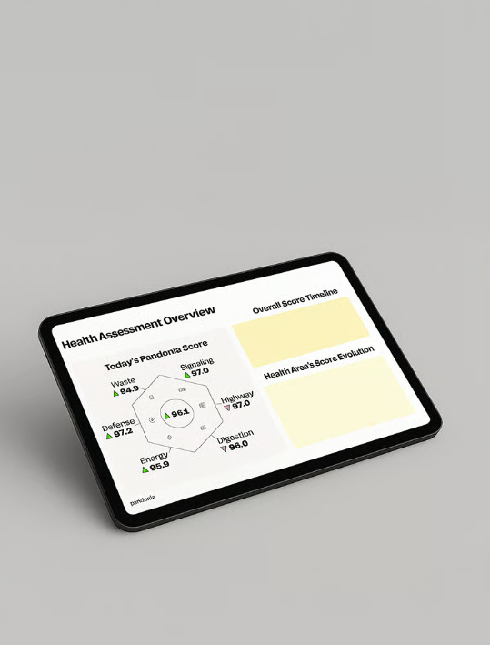
Ægte · produktrenderTallene bliver først til noget, når nogen sætter dem ind i dit liv.
Benedikte Halle er læge hos Pandonia.
Laboratoriet
Vi har vores eget laboratorium på Langebrogade i København. Det er grunden til, at svaret kan nå frem samme dag.
Awaiting sign-off — English wordingWe have our own laboratory on Langebrogade in Copenhagen. That is why the answer can reach you the same day.
To måder at begynde på.
- Health Test + ConsultationPandonia Score og seks systemscorer.4.750 kr.
- Health TestSamme markører.3.500 kr.
Enkelte tests fra 1.000 kr.
Ét tal fortæller sjældent noget alene.
En blodprøve er ikke en facitliste.
Markørnavne verificeret
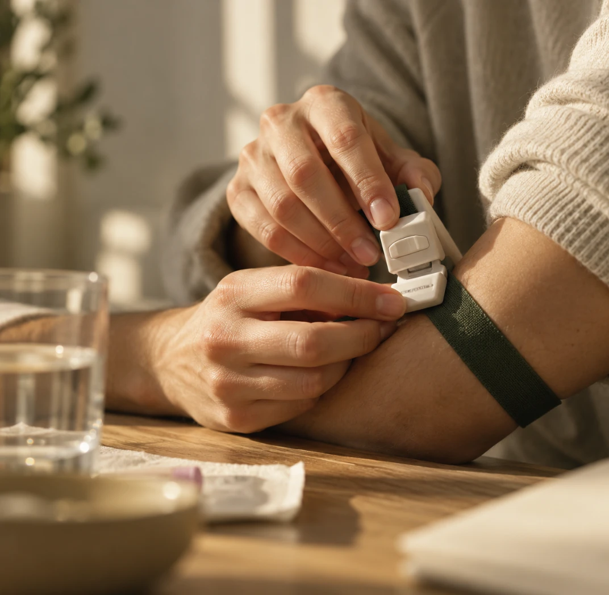
Stock · ikke PandoniaAlle markører
Ingen markører matcher.
Kroppen arbejder ikke i kasser.
Pandonia-modellen beskriver seks systemer.
Niveau 3 — afventer klinisk godkendelseEnheder, referenceområder, markør-til-system-mapping, fortolkning og scoreberegning findes ikke offentligt og er ikke gættet.
Level 3 — awaiting clinical approvalUnits, reference ranges, marker-to-system mapping, interpretation and score calculation are not published anywhere and have not been guessed.
Hvad vi ikke måler.
Afventer klinisk tekstEt kort afsnit om hvad testen ikke dækker, og hvornår man skal tale med sin egen læge i stedet.
Awaiting clinical textA short section on what the test does not cover, and when to speak to your own doctor instead.
Fra dit køkkenbord til dit svar.
Hele forløbet foregår på én dag.
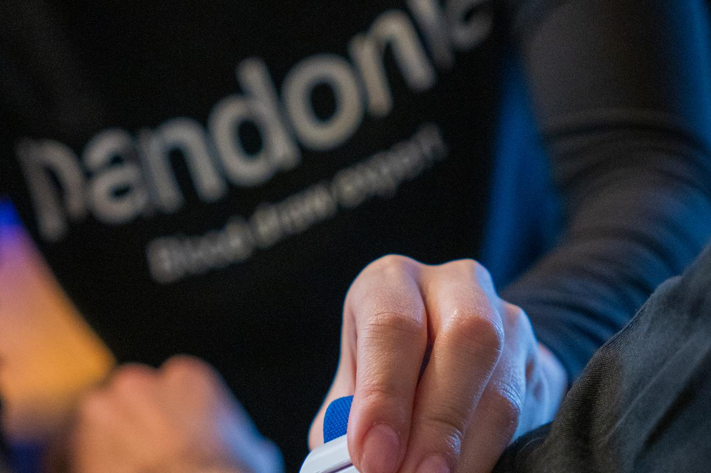
Ægte · PandoniaFør
Aftenen inden
Fast i mindst 12 timer.
Vi anbefaler at prøven tages tidligt på dagen.
Morgenen
Vi kommer til dig
Vores blodprøvetager har erfaring fra flere hospitaler.
Afventer godkendelseBookingsystemet afsætter 10 minutter til Health Test og 15 til test med konsultation. Hjemmesiden siger fem minutter. Hvilket tal er det rigtige udadtil?
Awaiting sign-offThe booking system allocates 10 minutes for the Health Test and 15 for test with consultation. The site says five minutes. Which figure is customer-facing?
Vi kommer i disse områder
København K, N, NV, V, S, SV, Ø, Frederiksberg og Hellerup.
Midt på dagen
Laboratoriet
Vi har vores eget laboratorium på Langebrogade.
Vi analyserer selv, i samme by som du bor i.
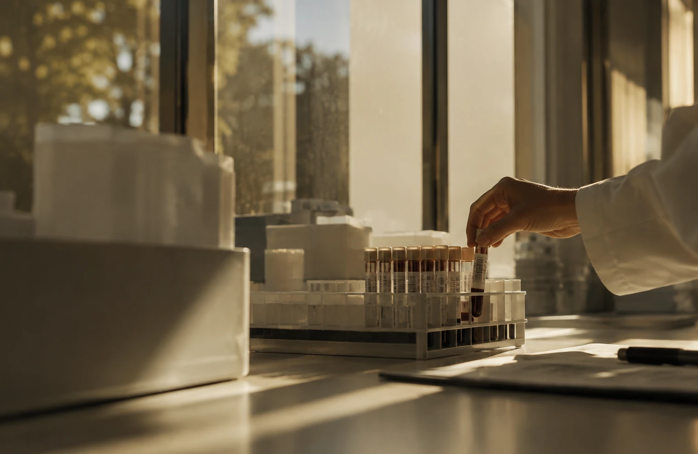
Stock · ikke Pandonia- Adresse
- Langebrogade 3A, 2. sal
1411 København K - Akkreditering
- AfventerUnder hvilken godkendelse laboratoriet drives.
- Metode
- AfventerHvilke analyser køres i huset.
- Kvalitetskontrol
- AfventerHvordan resultater kontrolleres.
Efter frokost
Rapporten
Afventer godkendelseEr 2–4 timer typisk eller bedste tilfælde? Et interval præsenteret som et løfte har brug for et oplyst grundlag.
Awaiting sign-offIs 2–4 hours typical or best case? A range presented as a promise needs a stated basis.
Den er skrevet til at blive læst af dig.
Senere samme dag
Samtalen
Det, du får, er ikke en liste med tal.
Det er en rapport, hvor hver måling står sammen med sit referenceområde.
Pandonias nuværende rapport
Sådan ser rapporten ud i dag.
Skærmbillede skal opdateresSkærmen viser forsiden af Pandonias rapport-deck — ikke scorevisningen, som teksten her beskriver. Erstattes af et aktuelt skærmbillede før lancering.
Updated product screenshot requiredThe screen shows the cover of Pandonia's report deck — not the score view this text describes. Replace with a current screenshot before launch.
I det nye design
De seks systemscorer
Samme figur, hele vejen igennem.
Din samlede score og de seks systemscorer tegnes på samme måde som en enkelt markør.
Afventer klinisk bekræftelseHvad de seks scorer måler på, og hvordan Pandonia Score beregnes.
Awaiting clinical confirmationWhat the six scores are scored on, and how the Pandonia Score is calculated.
Vi ville gerne gøre det nemmere at se efter.
Pandonia er et lille hold i København.
Hvorfor hjemme
De fleste udskyder en blodprøve, fordi den koster en formiddag.
Fem minutter, og dagen fortsætter.
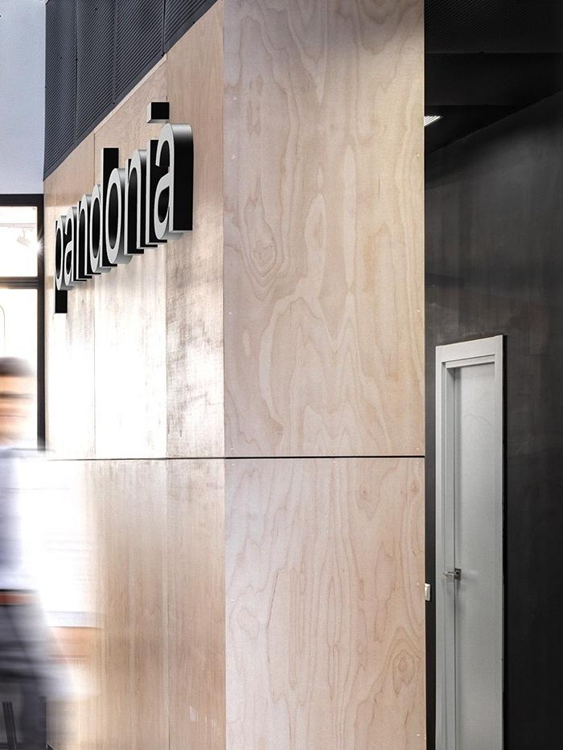
ÆgteHvorfor vores eget laboratorium
Det havde været billigere at sende prøverne videre.
Laboratoriet ligger på Langebrogade.
Modellen
Pandonia Health-modellen.
Vi kan ikke love beskyttelse mod dem.
Holdet
Seks mennesker i København.
- Ægte
Navn afventer parring
- Ægte
Navn afventer parring
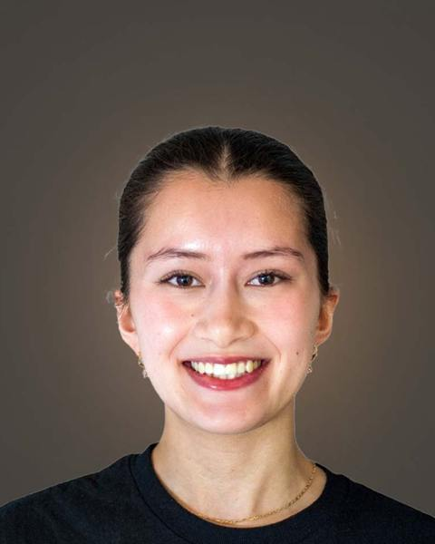
ÆgteNavn afventer parring
- Ægte
Navn afventer parring
Benedikte Halle · Deborah Saren · Carol Melo · Laura D. Ellis-Aguilar · Cecilie Lange · Victor Prehn
Skal bekræftesNavne og roller er verificeret fra pandonia.com. Portrætterne er ægte Pandonia-medarbejdere, men kan ikke parres med navne ud fra offentligt materiale. Portrætter kræver desuden samtykke.
To be confirmedNames and roles are verified from pandonia.com. The portraits are genuine Pandonia staff but cannot be matched to names from public material. Portraits also require consent.
Spørgsmål, i den rækkefølge de plejer at komme.
Vælg en tid, så kommer vi.
Alt herunder foregår i København.
Priser verificeret fra Pandonias bookingsystem.
Vil du begynde mindre?
Syv enkelttests.
Også som gavekort, klippekort og virksomhedsordning.